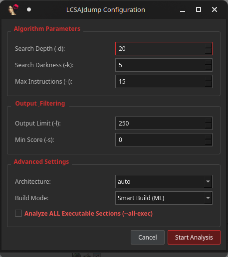

Plugin / IDA Pro
IDA
Pro
Drop ida_lcsajdump.py into ~/.idapro/plugins/.
Press Ctrl+Shift+L to open the dockable gadget panel with live register filtering.
Available
IDA 7.x · 8.x · 9.x
x86_64 · ARM64 · RISC-V64
